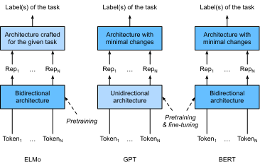
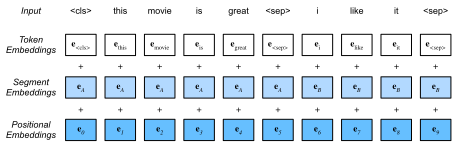

Bidirectional Encoder Representations from Transformers (BERT)⚓︎
:label:sec_bert
We have introduced several word embedding models for natural language understanding. After pretraining, the output can be thought of as a matrix where each row is a vector that represents a word of a predefined vocabulary. In fact, these word embedding models are all context-independent. Let's begin by illustrating this property.
From Context-Independent to Context-Sensitive⚓︎
Recall the experiments in :numref:sec_word2vec_pretraining and :numref:sec_synonyms.
For instance, word2vec and GloVe both assign the same pretrained vector to the same word regardless of the context of the word (if any).
Formally, a context-independent representation of any token \(x\)
is a function \(f(x)\) that only takes \(x\) as its input.
Given the abundance of polysemy and complex semantics in natural languages,
context-independent representations have obvious limitations.
For instance, the word "crane" in contexts
"a crane is flying" and "a crane driver came" has completely different meanings;
thus, the same word may be assigned different representations depending on contexts.
This motivates the development of context-sensitive word representations,
where representations of words depend on their contexts.
Hence, a context-sensitive representation of token \(x\) is a function \(f(x, c(x))\)
depending on both \(x\) and its context \(c(x)\).
Popular context-sensitive representations
include TagLM (language-model-augmented sequence tagger) :cite:Peters.Ammar.Bhagavatula.ea.2017,
CoVe (Context Vectors) :cite:McCann.Bradbury.Xiong.ea.2017,
and ELMo (Embeddings from Language Models) :cite:Peters.Neumann.Iyyer.ea.2018.
For example, by taking the entire sequence as input, ELMo is a function that assigns a representation to each word from the input sequence. Specifically, ELMo combines all the intermediate layer representations from pretrained bidirectional LSTM as the output representation. Then the ELMo representation will be added to a downstream task's existing supervised model as additional features, such as by concatenating ELMo representation and the original representation (e.g., GloVe) of tokens in the existing model. On the one hand, all the weights in the pretrained bidirectional LSTM model are frozen after ELMo representations are added. On the other hand, the existing supervised model is specifically customized for a given task. Leveraging different best models for different tasks at that time, adding ELMo improved the state of the art across six natural language processing tasks: sentiment analysis, natural language inference, semantic role labeling, coreference resolution, named entity recognition, and question answering.
From Task-Specific to Task-Agnostic⚓︎
Although ELMo has significantly improved solutions to a diverse set of natural language processing tasks,
each solution still hinges on a task-specific architecture.
However, it is practically non-trivial to craft a specific architecture for every natural language processing task.
The GPT (Generative Pre-Training) model represents an effort in designing
a general task-agnostic model for context-sensitive representations :cite:Radford.Narasimhan.Salimans.ea.2018.
Built on a Transformer decoder,
GPT pretrains a language model that will be used to represent text sequences.
When applying GPT to a downstream task,
the output of the language model will be fed into an added linear output layer
to predict the label of the task.
In sharp contrast to ELMo that freezes parameters of the pretrained model,
GPT fine-tunes all the parameters in the pretrained Transformer decoder
during supervised learning of the downstream task.
GPT was evaluated on twelve tasks of natural language inference,
question answering, sentence similarity, and classification,
and improved the state of the art in nine of them with minimal changes
to the model architecture.
However, due to the autoregressive nature of language models, GPT only looks forward (left-to-right). In contexts "i went to the bank to deposit cash" and "i went to the bank to sit down", as "bank" is sensitive to the context to its left, GPT will return the same representation for "bank", though it has different meanings.
BERT: Combining the Best of Both Worlds⚓︎
As we have seen,
ELMo encodes context bidirectionally but uses task-specific architectures;
while GPT is task-agnostic but encodes context left-to-right.
Combining the best of both worlds,
BERT (Bidirectional Encoder Representations from Transformers)
encodes context bidirectionally and requires minimal architecture changes
for a wide range of natural language processing tasks :cite:Devlin.Chang.Lee.ea.2018.
Using a pretrained Transformer encoder,
BERT is able to represent any token based on its bidirectional context.
During supervised learning of downstream tasks,
BERT is similar to GPT in two aspects.
First, BERT representations will be fed into an added output layer,
with minimal changes to the model architecture depending on nature of tasks,
such as predicting for every token vs. predicting for the entire sequence.
Second,
all the parameters of the pretrained Transformer encoder are fine-tuned,
while the additional output layer will be trained from scratch.
:numref:fig_elmo-gpt-bert depicts the differences among ELMo, GPT, and BERT.

:label:fig_elmo-gpt-bert
BERT further improved the state of the art on eleven natural language processing tasks under broad categories of (i) single text classification (e.g., sentiment analysis), (ii) text pair classification (e.g., natural language inference), (iii) question answering, (iv) text tagging (e.g., named entity recognition). All proposed in 2018, from context-sensitive ELMo to task-agnostic GPT and BERT, conceptually simple yet empirically powerful pretraining of deep representations for natural languages have revolutionized solutions to various natural language processing tasks.
In the rest of this chapter,
we will dive into the pretraining of BERT.
When natural language processing applications are explained in :numref:chap_nlp_app,
we will illustrate fine-tuning of BERT for downstream applications.
#@tab mxnet
from d2l import mxnet as d2l
from mxnet import gluon, np, npx
from mxnet.gluon import nn
npx.set_np()
#@tab pytorch
from d2l import torch as d2l
import torch
from torch import nn
[Input Representation]⚓︎
:label:subsec_bert_input_rep
In natural language processing, some tasks (e.g., sentiment analysis) take single text as input, while in some other tasks (e.g., natural language inference), the input is a pair of text sequences. The BERT input sequence unambiguously represents both single text and text pairs. In the former, the BERT input sequence is the concatenation of the special classification token “<cls>”, tokens of a text sequence, and the special separation token “<sep>”. In the latter, the BERT input sequence is the concatenation of “<cls>”, tokens of the first text sequence, “<sep>”, tokens of the second text sequence, and “<sep>”. We will consistently distinguish the terminology "BERT input sequence" from other types of "sequences". For instance, one BERT input sequence may include either one text sequence or two text sequences.
To distinguish text pairs, the learned segment embeddings \(\mathbf{e}_A\) and \(\mathbf{e}_B\) are added to the token embeddings of the first sequence and the second sequence, respectively. For single text inputs, only \(\mathbf{e}_A\) is used.
The following get_tokens_and_segments takes either one sentence or two sentences
as input, then returns tokens of the BERT input sequence
and their corresponding segment IDs.
#@tab all
#@save
def get_tokens_and_segments(tokens_a, tokens_b=None):
"""Get tokens of the BERT input sequence and their segment IDs."""
tokens = ['<cls>'] + tokens_a + ['<sep>']
# 0 and 1 are marking segment A and B, respectively
segments = [0] * (len(tokens_a) + 2)
if tokens_b is not None:
tokens += tokens_b + ['<sep>']
segments += [1] * (len(tokens_b) + 1)
return tokens, segments
BERT chooses the Transformer encoder as its bidirectional architecture.
Common in the Transformer encoder,
positional embeddings are added at every position of the BERT input sequence.
However, different from the original Transformer encoder,
BERT uses learnable positional embeddings.
To sum up, :numref:fig_bert-input shows that
the embeddings of the BERT input sequence are the sum
of the token embeddings, segment embeddings, and positional embeddings.

:label:fig_bert-input
The following [BERTEncoder class] is similar to the TransformerEncoder class
as implemented in :numref:sec_transformer.
Different from TransformerEncoder, BERTEncoder uses
segment embeddings and learnable positional embeddings.
#@tab mxnet
#@save
class BERTEncoder(nn.Block):
"""BERT encoder."""
def __init__(self, vocab_size, num_hiddens, ffn_num_hiddens, num_heads,
num_blks, dropout, max_len=1000, **kwargs):
super(BERTEncoder, self).__init__(**kwargs)
self.token_embedding = nn.Embedding(vocab_size, num_hiddens)
self.segment_embedding = nn.Embedding(2, num_hiddens)
self.blks = nn.Sequential()
for _ in range(num_blks):
self.blks.add(d2l.TransformerEncoderBlock(
num_hiddens, ffn_num_hiddens, num_heads, dropout, True))
# In BERT, positional embeddings are learnable, thus we create a
# parameter of positional embeddings that are long enough
self.pos_embedding = self.params.get('pos_embedding',
shape=(1, max_len, num_hiddens))
def forward(self, tokens, segments, valid_lens):
# Shape of `X` remains unchanged in the following code snippet:
# (batch size, max sequence length, `num_hiddens`)
X = self.token_embedding(tokens) + self.segment_embedding(segments)
X = X + self.pos_embedding.data(ctx=X.ctx)[:, :X.shape[1], :]
for blk in self.blks:
X = blk(X, valid_lens)
return X
#@tab pytorch
#@save
class BERTEncoder(nn.Module):
"""BERT encoder."""
def __init__(self, vocab_size, num_hiddens, ffn_num_hiddens, num_heads,
num_blks, dropout, max_len=1000, **kwargs):
super(BERTEncoder, self).__init__(**kwargs)
self.token_embedding = nn.Embedding(vocab_size, num_hiddens)
self.segment_embedding = nn.Embedding(2, num_hiddens)
self.blks = nn.Sequential()
for i in range(num_blks):
self.blks.add_module(f"{i}", d2l.TransformerEncoderBlock(
num_hiddens, ffn_num_hiddens, num_heads, dropout, True))
# In BERT, positional embeddings are learnable, thus we create a
# parameter of positional embeddings that are long enough
self.pos_embedding = nn.Parameter(torch.randn(1, max_len,
num_hiddens))
def forward(self, tokens, segments, valid_lens):
# Shape of `X` remains unchanged in the following code snippet:
# (batch size, max sequence length, `num_hiddens`)
X = self.token_embedding(tokens) + self.segment_embedding(segments)
X = X + self.pos_embedding[:, :X.shape[1], :]
for blk in self.blks:
X = blk(X, valid_lens)
return X
Suppose that the vocabulary size is 10000.
To demonstrate forward [inference of BERTEncoder],
let's create an instance of it and initialize its parameters.
#@tab mxnet
vocab_size, num_hiddens, ffn_num_hiddens, num_heads = 10000, 768, 1024, 4
num_blks, dropout = 2, 0.2
encoder = BERTEncoder(vocab_size, num_hiddens, ffn_num_hiddens, num_heads,
num_blks, dropout)
encoder.initialize()
#@tab pytorch
vocab_size, num_hiddens, ffn_num_hiddens, num_heads = 10000, 768, 1024, 4
ffn_num_input, num_blks, dropout = 768, 2, 0.2
encoder = BERTEncoder(vocab_size, num_hiddens, ffn_num_hiddens, num_heads,
num_blks, dropout)
We define tokens to be 2 BERT input sequences of length 8,
where each token is an index of the vocabulary.
The forward inference of BERTEncoder with the input tokens
returns the encoded result where each token is represented by a vector
whose length is predefined by the hyperparameter num_hiddens.
This hyperparameter is usually referred to as the hidden size
(number of hidden units) of the Transformer encoder.
#@tab mxnet
tokens = np.random.randint(0, vocab_size, (2, 8))
segments = np.array([[0, 0, 0, 0, 1, 1, 1, 1], [0, 0, 0, 1, 1, 1, 1, 1]])
encoded_X = encoder(tokens, segments, None)
encoded_X.shape
#@tab pytorch
tokens = torch.randint(0, vocab_size, (2, 8))
segments = torch.tensor([[0, 0, 0, 0, 1, 1, 1, 1], [0, 0, 0, 1, 1, 1, 1, 1]])
encoded_X = encoder(tokens, segments, None)
encoded_X.shape
Pretraining Tasks⚓︎
:label:subsec_bert_pretraining_tasks
The forward inference of BERTEncoder gives the BERT representation
of each token of the input text and the inserted
special tokens “<cls>” and “<seq>”.
Next, we will use these representations to compute the loss function
for pretraining BERT.
The pretraining is composed of the following two tasks:
masked language modeling and next sentence prediction.
[Masked Language Modeling]⚓︎
:label:subsec_mlm
As illustrated in :numref:sec_language-model,
a language model predicts a token using the context on its left.
To encode context bidirectionally for representing each token,
BERT randomly masks tokens and uses tokens from the bidirectional context to
predict the masked tokens in a self-supervised fashion.
This task is referred to as a masked language model.
In this pretraining task, 15% of tokens will be selected at random as the masked tokens for prediction. To predict a masked token without cheating by using the label, one straightforward approach is to always replace it with a special “<mask>” token in the BERT input sequence. However, the artificial special token “<mask>” will never appear in fine-tuning. To avoid such a mismatch between pretraining and fine-tuning, if a token is masked for prediction (e.g., "great" is selected to be masked and predicted in "this movie is great"), in the input it will be replaced with:
- a special “<mask>” token for 80% of the time (e.g., "this movie is great" becomes "this movie is <mask>");
- a random token for 10% of the time (e.g., "this movie is great" becomes "this movie is drink");
- the unchanged label token for 10% of the time (e.g., "this movie is great" becomes "this movie is great").
Note that for 10% of 15% time a random token is inserted. This occasional noise encourages BERT to be less biased towards the masked token (especially when the label token remains unchanged) in its bidirectional context encoding.
We implement the following MaskLM class to predict masked tokens
in the masked language model task of BERT pretraining.
The prediction uses a one-hidden-layer MLP (self.mlp).
In forward inference, it takes two inputs:
the encoded result of BERTEncoder and the token positions for prediction.
The output is the prediction results at these positions.
#@tab mxnet
#@save
class MaskLM(nn.Block):
"""The masked language model task of BERT."""
def __init__(self, vocab_size, num_hiddens, **kwargs):
super(MaskLM, self).__init__(**kwargs)
self.mlp = nn.Sequential()
self.mlp.add(
nn.Dense(num_hiddens, flatten=False, activation='relu'))
self.mlp.add(nn.LayerNorm())
self.mlp.add(nn.Dense(vocab_size, flatten=False))
def forward(self, X, pred_positions):
num_pred_positions = pred_positions.shape[1]
pred_positions = pred_positions.reshape(-1)
batch_size = X.shape[0]
batch_idx = np.arange(0, batch_size)
# Suppose that `batch_size` = 2, `num_pred_positions` = 3, then
# `batch_idx` is `np.array([0, 0, 0, 1, 1, 1])`
batch_idx = np.repeat(batch_idx, num_pred_positions)
masked_X = X[batch_idx, pred_positions]
masked_X = masked_X.reshape((batch_size, num_pred_positions, -1))
mlm_Y_hat = self.mlp(masked_X)
return mlm_Y_hat
#@tab pytorch
#@save
class MaskLM(nn.Module):
"""The masked language model task of BERT."""
def __init__(self, vocab_size, num_hiddens, **kwargs):
super(MaskLM, self).__init__(**kwargs)
self.mlp = nn.Sequential(nn.LazyLinear(num_hiddens),
nn.ReLU(),
nn.LayerNorm(num_hiddens),
nn.LazyLinear(vocab_size))
def forward(self, X, pred_positions):
num_pred_positions = pred_positions.shape[1]
pred_positions = pred_positions.reshape(-1)
batch_size = X.shape[0]
batch_idx = torch.arange(0, batch_size)
# Suppose that `batch_size` = 2, `num_pred_positions` = 3, then
# `batch_idx` is `torch.tensor([0, 0, 0, 1, 1, 1])`
batch_idx = torch.repeat_interleave(batch_idx, num_pred_positions)
masked_X = X[batch_idx, pred_positions]
masked_X = masked_X.reshape((batch_size, num_pred_positions, -1))
mlm_Y_hat = self.mlp(masked_X)
return mlm_Y_hat
To demonstrate [the forward inference of MaskLM],
we create its instance mlm and initialize it.
Recall that encoded_X from the forward inference of BERTEncoder
represents 2 BERT input sequences.
We define mlm_positions as the 3 indices to predict in either BERT input sequence of encoded_X.
The forward inference of mlm returns prediction results mlm_Y_hat
at all the masked positions mlm_positions of encoded_X.
For each prediction, the size of the result is equal to the vocabulary size.
#@tab mxnet
mlm = MaskLM(vocab_size, num_hiddens)
mlm.initialize()
mlm_positions = np.array([[1, 5, 2], [6, 1, 5]])
mlm_Y_hat = mlm(encoded_X, mlm_positions)
mlm_Y_hat.shape
#@tab pytorch
mlm = MaskLM(vocab_size, num_hiddens)
mlm_positions = torch.tensor([[1, 5, 2], [6, 1, 5]])
mlm_Y_hat = mlm(encoded_X, mlm_positions)
mlm_Y_hat.shape
With the ground truth labels mlm_Y of the predicted tokens mlm_Y_hat under masks,
we can calculate the cross-entropy loss of the masked language model task in BERT pretraining.
#@tab mxnet
mlm_Y = np.array([[7, 8, 9], [10, 20, 30]])
loss = gluon.loss.SoftmaxCrossEntropyLoss()
mlm_l = loss(mlm_Y_hat.reshape((-1, vocab_size)), mlm_Y.reshape(-1))
mlm_l.shape
#@tab pytorch
mlm_Y = torch.tensor([[7, 8, 9], [10, 20, 30]])
loss = nn.CrossEntropyLoss(reduction='none')
mlm_l = loss(mlm_Y_hat.reshape((-1, vocab_size)), mlm_Y.reshape(-1))
mlm_l.shape
[Next Sentence Prediction]⚓︎
:label:subsec_nsp
Although masked language modeling is able to encode bidirectional context for representing words, it does not explicitly model the logical relationship between text pairs. To help understand the relationship between two text sequences, BERT considers a binary classification task, next sentence prediction, in its pretraining. When generating sentence pairs for pretraining, for half of the time they are indeed consecutive sentences with the label "True"; while for the other half of the time the second sentence is randomly sampled from the corpus with the label "False".
The following NextSentencePred class uses a one-hidden-layer MLP
to predict whether the second sentence is the next sentence of the first
in the BERT input sequence.
Due to self-attention in the Transformer encoder,
the BERT representation of the special token “<cls>”
encodes both the two sentences from the input.
Hence, the output layer (self.output) of the MLP classifier takes X as input,
where X is the output of the MLP hidden layer whose input is the encoded “<cls>” token.
#@tab mxnet
#@save
class NextSentencePred(nn.Block):
"""The next sentence prediction task of BERT."""
def __init__(self, **kwargs):
super(NextSentencePred, self).__init__(**kwargs)
self.output = nn.Dense(2)
def forward(self, X):
# `X` shape: (batch size, `num_hiddens`)
return self.output(X)
#@tab pytorch
#@save
class NextSentencePred(nn.Module):
"""The next sentence prediction task of BERT."""
def __init__(self, **kwargs):
super(NextSentencePred, self).__init__(**kwargs)
self.output = nn.LazyLinear(2)
def forward(self, X):
# `X` shape: (batch size, `num_hiddens`)
return self.output(X)
We can see that [the forward inference of an NextSentencePred] instance
returns binary predictions for each BERT input sequence.
#@tab mxnet
nsp = NextSentencePred()
nsp.initialize()
nsp_Y_hat = nsp(encoded_X)
nsp_Y_hat.shape
#@tab pytorch
# PyTorch by default will not flatten the tensor as seen in mxnet where, if
# flatten=True, all but the first axis of input data are collapsed together
encoded_X = torch.flatten(encoded_X, start_dim=1)
# input_shape for NSP: (batch size, `num_hiddens`)
nsp = NextSentencePred()
nsp_Y_hat = nsp(encoded_X)
nsp_Y_hat.shape
The cross-entropy loss of the 2 binary classifications can also be computed.
#@tab mxnet
nsp_y = np.array([0, 1])
nsp_l = loss(nsp_Y_hat, nsp_y)
nsp_l.shape
#@tab pytorch
nsp_y = torch.tensor([0, 1])
nsp_l = loss(nsp_Y_hat, nsp_y)
nsp_l.shape
It is noteworthy that all the labels in both the aforementioned pretraining tasks
can be trivially obtained from the pretraining corpus without manual labeling effort.
The original BERT has been pretrained on the concatenation of BookCorpus :cite:Zhu.Kiros.Zemel.ea.2015
and English Wikipedia.
These two text corpora are huge:
they have 800 million words and 2.5 billion words, respectively.
[Putting It All Together]⚓︎
When pretraining BERT, the final loss function is a linear combination of
both the loss functions for masked language modeling and next sentence prediction.
Now we can define the BERTModel class by instantiating the three classes
BERTEncoder, MaskLM, and NextSentencePred.
The forward inference returns the encoded BERT representations encoded_X,
predictions of masked language modeling mlm_Y_hat,
and next sentence predictions nsp_Y_hat.
#@tab mxnet
#@save
class BERTModel(nn.Block):
"""The BERT model."""
def __init__(self, vocab_size, num_hiddens, ffn_num_hiddens, num_heads,
num_blks, dropout, max_len=1000):
super(BERTModel, self).__init__()
self.encoder = BERTEncoder(vocab_size, num_hiddens, ffn_num_hiddens,
num_heads, num_blks, dropout, max_len)
self.hidden = nn.Dense(num_hiddens, activation='tanh')
self.mlm = MaskLM(vocab_size, num_hiddens)
self.nsp = NextSentencePred()
def forward(self, tokens, segments, valid_lens=None, pred_positions=None):
encoded_X = self.encoder(tokens, segments, valid_lens)
if pred_positions is not None:
mlm_Y_hat = self.mlm(encoded_X, pred_positions)
else:
mlm_Y_hat = None
# The hidden layer of the MLP classifier for next sentence prediction.
# 0 is the index of the '<cls>' token
nsp_Y_hat = self.nsp(self.hidden(encoded_X[:, 0, :]))
return encoded_X, mlm_Y_hat, nsp_Y_hat
#@tab pytorch
#@save
class BERTModel(nn.Module):
"""The BERT model."""
def __init__(self, vocab_size, num_hiddens, ffn_num_hiddens,
num_heads, num_blks, dropout, max_len=1000):
super(BERTModel, self).__init__()
self.encoder = BERTEncoder(vocab_size, num_hiddens, ffn_num_hiddens,
num_heads, num_blks, dropout,
max_len=max_len)
self.hidden = nn.Sequential(nn.LazyLinear(num_hiddens),
nn.Tanh())
self.mlm = MaskLM(vocab_size, num_hiddens)
self.nsp = NextSentencePred()
def forward(self, tokens, segments, valid_lens=None, pred_positions=None):
encoded_X = self.encoder(tokens, segments, valid_lens)
if pred_positions is not None:
mlm_Y_hat = self.mlm(encoded_X, pred_positions)
else:
mlm_Y_hat = None
# The hidden layer of the MLP classifier for next sentence prediction.
# 0 is the index of the '<cls>' token
nsp_Y_hat = self.nsp(self.hidden(encoded_X[:, 0, :]))
return encoded_X, mlm_Y_hat, nsp_Y_hat
Summary⚓︎
- Word embedding models such as word2vec and GloVe are context-independent. They assign the same pretrained vector to the same word regardless of the context of the word (if any). It is hard for them to handle well polysemy or complex semantics in natural languages.
- For context-sensitive word representations such as ELMo and GPT, representations of words depend on their contexts.
- ELMo encodes context bidirectionally but uses task-specific architectures (however, it is practically non-trivial to craft a specific architecture for every natural language processing task); while GPT is task-agnostic but encodes context left-to-right.
- BERT combines the best of both worlds: it encodes context bidirectionally and requires minimal architecture changes for a wide range of natural language processing tasks.
- The embeddings of the BERT input sequence are the sum of the token embeddings, segment embeddings, and positional embeddings.
- Pretraining BERT is composed of two tasks: masked language modeling and next sentence prediction. The former is able to encode bidirectional context for representing words, while the latter explicitly models the logical relationship between text pairs.
Exercises⚓︎
- All other things being equal, will a masked language model require more or fewer pretraining steps to converge than a left-to-right language model? Why?
- In the original implementation of BERT, the positionwise feed-forward network in
BERTEncoder(viad2l.TransformerEncoderBlock) and the fully connected layer inMaskLMboth use the Gaussian error linear unit (GELU) :cite:Hendrycks.Gimpel.2016as the activation function. Research into the difference between GELU and ReLU.
:begin_tab:mxnet
Discussions
:end_tab:
:begin_tab:pytorch
Discussions
:end_tab:
创建日期: November 25, 2023